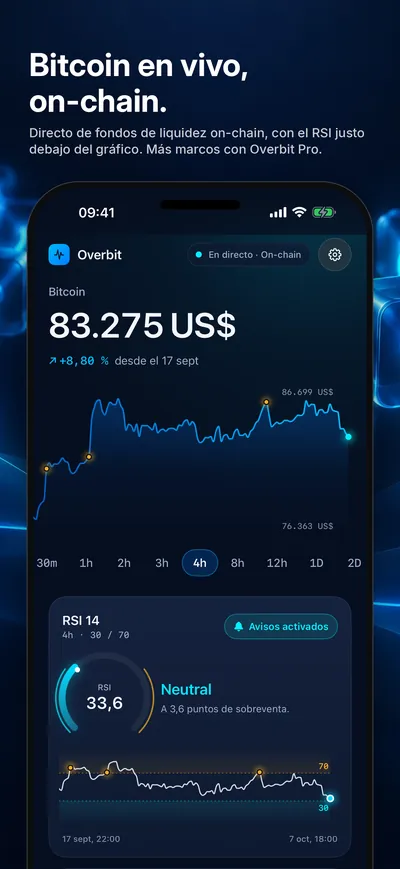
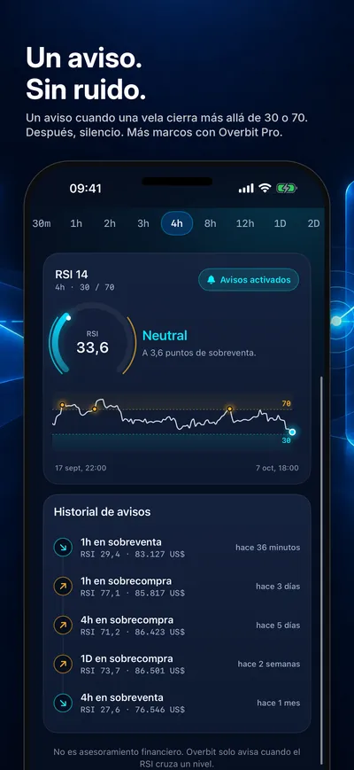
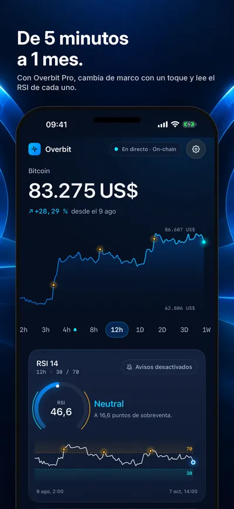
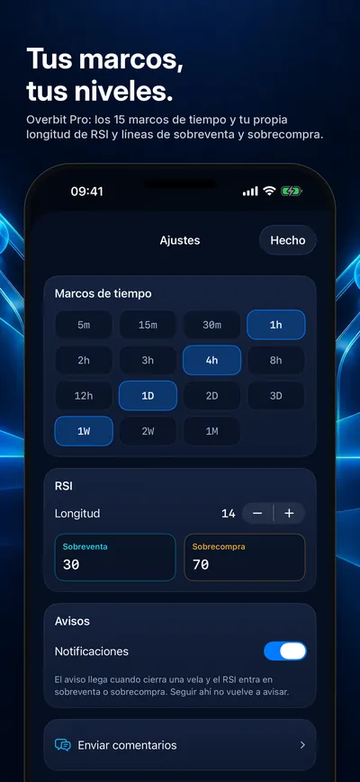
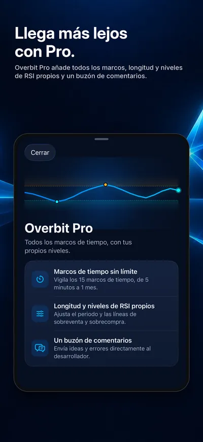

Seize Apps · iOS
Overbit
Overbit vigila un solo número, el RSI de Bitcoin, y te avisa cuando una vela cerrada cruza a sobreventa o sobrecompra. Un aviso por cruce, y silencio mientras el RSI sigue en la zona. El precio no sale de un exchange: nuestro servidor lee fondos de liquidez públicos on-chain (Bitcoin envuelto frente a la stablecoin USDC) y, si los fondos discrepan, los avisos de marcos de 15 minutos o menos se pausan hasta que vuelvan a coincidir. Overbit no opera, no guarda nada por ti y no da consejos financieros.





Qué hace
Una sola cosa, bien hecha.
- 01 / VIGILAR
Una pantalla, un número
El precio de Bitcoin en vivo, un gráfico del marco elegido y debajo un panel de RSI con las bandas de 30 y 70 sombreadas y los cruces pasados marcados. Pulsa y arrastra para leer cualquier vela.
- 02 / AVISAR
Un aviso por cruce
Una notificación cuando una vela cierra más allá de la línea, entregada por push con la app cerrada. El siguiente llega solo cuando el RSI sale de la zona y vuelve a entrar. Un historial lista cada aviso enviado.
- 03 / PRO
Todos los marcos, tus niveles
De serie, Overbit vigila un marco con RSI 14 y niveles 30 y 70. Overbit Pro, una compra única, abre los 15 marcos de 5 minutos a 1 mes y tu propia longitud y niveles de RSI.
Privacidad
Tuyo, no nuestro.
Overbit no tiene cuenta. Para enviar avisos registra un identificador de instalación aleatorio (y, con los avisos activados, tu token push y los marcos que vigilas) en un servidor de Seize en Fráncfort; Borrar mis datos, en Ajustes, elimina ese registro. Overbit incluye además RevenueCat, solo para analítica de compras. Su sección de privacidad detalla cada punto.
Una app de Seize Apps.